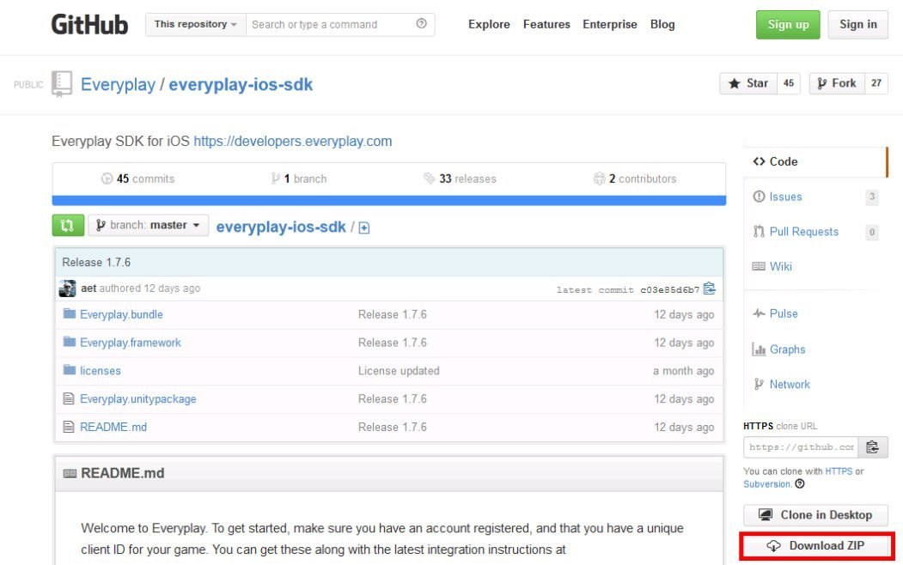
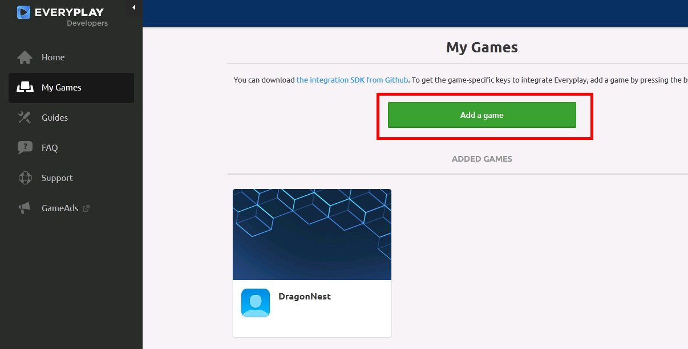
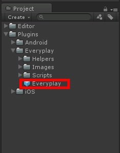
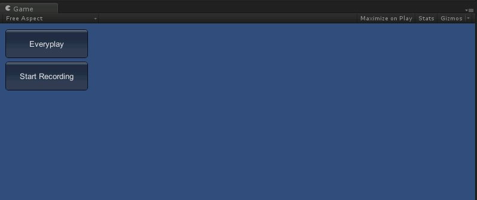

1.下載Everyplay
至Everyplay developer官網下載Everyplay SDK

Android SDK
https://github.com/Everyplay/everyplay-android-sdk
iOS SDK
https://github.com/Everyplay/everyplay-ios-sdk
2.申請Everyplay帳號並註冊遊戲
https://developers.everyplay.com/
至官網My Games項目下添加遊戲
獲取Client ID 及 Client Secret

3.匯入Everyplay 插件至unity專案
在Unity project面板中點選滑鼠右鍵
選擇Import package → custom package
匯入插件至Unity
4.添加Everyplay Prefab至場景中
在Inspector面板中輸入對應參數
並將Everyplay Test Component選項打勾
以便測試Everyplay

5.輸出遊戲至android或ios平台
Everyplay插件無法在Unity Editor模式下使用
需要將檔案輸出至移動平台上測試

6.成功